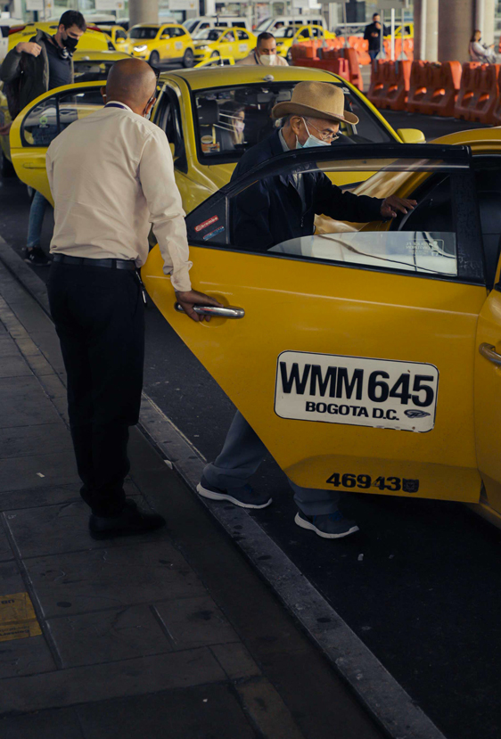
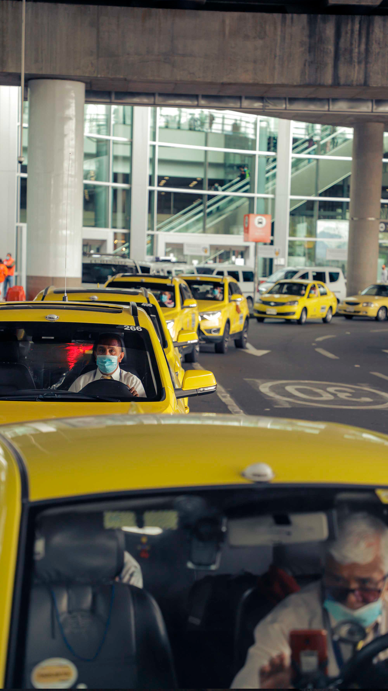
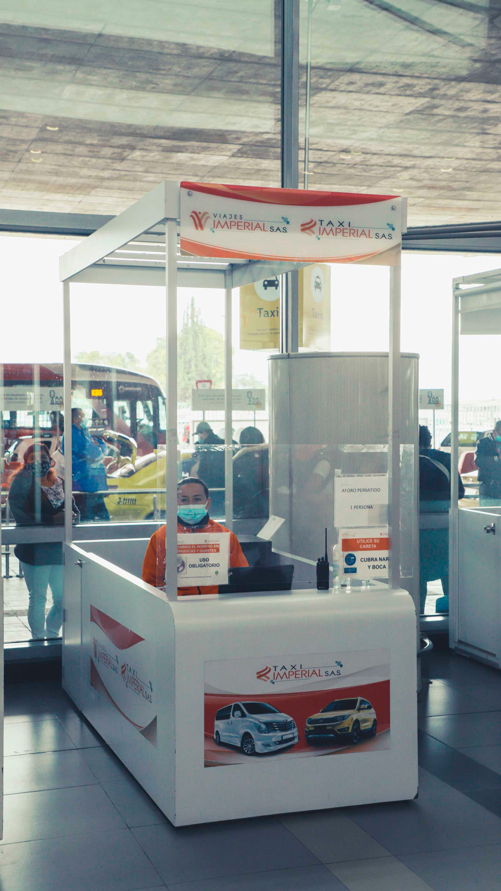

Taxi Imperial Aeropuerto - El Dorado
¿Quienes Somos?
TAXI IMPERIAL S.A.S , es la sociedad conformada por diferentes empresas del sector, que administra el transporte individual de pasajeros en vehículos tipo taxi y vehículos de servicio especial para la prestación del servicio en el Aeropuerto Internacional El Dorado de Bogotá , en desarrollo de un contrato con OPAIN S.A..
¿Qué Hacemos?
TAXI IMPERIAL presta sus servicios de administración y logísticos a las empresas habilitadas para prestar el servicio de transporte individual de pasajeros vinculadas a la compañía de acuerdo con el contrato con OPAIN S.A.
Con el propósito de prestar un servicio de taxi de calidad y generar experiencias positivas para quienes usan los servicios de terminal aéreo que sirve a la ciudad de Bogotá y alrededores, se identificaron e implementaron los procesos y controles mediante la estandarización de actividades necesarios para la administración y prestación del servicio de transporte tipo taxi en el Aeropuerto Internacional El Dorado de Bogotá . Este es el servicio que ofrece TAXI IMPERIAL.
TAXI IMPERIAL desarrolla su servicio bajo estándares de calidad, certificados por SGS dando cumplimiento del requisito de ISO 9001:2015.
Abastecimiento, logística, administración y procesamiento de datos para la ubicación, control y despacho de vehículos tipo taxis y vehículos de servicio especial en el Aeropuerto Internacional El Dorado de Bogotá .
El servicio de transporte individual de pasajeros en vehículos tipo taxi y de servicio especial en el Aeropuerto Internacional El Dorado de Bogotá , es administrado por TAXI IMPERIAL con rapidez, seguridad y comodidad, dando cumplimiento a los requisitos legales, normativos y reglamentarios, con el propósito de satisfacer adecuadamente las necesidades los usuarios. Como suplemento inescindible se ha implementado una plataforma tecnológica y Contac Center con TAXIS LIBRES, que centraliza la gestión de la información de la operación, con la finalidad de proveer una mejor experiencia para los usuarios y conductores.
Los servicios de transporte individual de pasajeros en vehículos taxi y servicios especiales no son prestados de manera directa por TAXI IMPERIAL.

Nuestro compromiso con la calidad, confort y seguridad supone garantizar un parque automotor moderno y adecuado, un recurso humano competente y comprometido, y un sistema de administración y gestión acorde con ese compromiso.

¿Cuáles son los requisitos de la flota de vehículos tipo taxi en taxi imperial para la prestación del servicio en el Aeropuerto El Dorado?
Ser taxi Color Amarillo.
Contar con frenos ABS, airbags frontales y apoyacabezas.
Tener cuatro puertas laterales
Tener una cabina de pasajeros con capacidad para acomodar a mínimo 5 personas incluido el conductor con un módulo de espacio por pasajero no inferior a 450 mm de ancho a la altura de los hombros y con el módulo de sillería de 750 mm.
Tener una bodega o espacio para el equipaje con capacidad no inferior a 0,40 m3
Para vincularse el vehículo no debe tener más de 3 años desde que se expidió la licencia de tránsito y su permanencia es hasta 5 años de antigüedad del vehículo.
El conductor debe portar correctamente el uniforme de acuerdo a los lineamientos de Taxi Imperial.
El vehículo debe estar siempre limpio y en buen estado.
El vehículo debe realizar sus mantenimientos preventivos y correctivos en tiempo para que el vehículo permanezca en óptimas condiciones mecánicas.
Los conductores deben asistir a las capacitaciones programadas por Taxi Imperial.
Los conductores deben prestar un excelente servicio y no tener quejas críticas o reincidentes.
¿Dónde prestamos nuestros servicios?
Los servicios de TAXI IMPERIAL son prestados desde las siguientes áreas del Aeropuerto Internacional El Dorado:
Horario
Lun. a vier. de 8:00 a.m. a 5:30 p.m. Sáb. de 8:00 a.m. a 1:00 p.m.
Horario adicional Lun.a sáb. de 05:30 p.m. a 09:30 p.m
TAXI IMPERIAL está comprometido con la libre competencia.
TAXI IMPERIAL, de la mano de la Superintendencia de Industria y Comercio, se ha comprometido de manera especial, según la Resolución 36870 de 2021, a la promoción de la libre competencia a través de las siguientes medidas, las cuales han sido aceptadas como garantías por esa Entidad:
- Primera garantía:
verificar la no existencia de referencia a dispositivos electrónicos de marca o fabricante específico para la prestación del servicio en las áreas concesionadas.
- Segunda garantía:
verificar la no existencia de referencia a vehículo de marca o fabricante para la prestación del servicio en las áreas concesionadas.
- Tercera garantía:
inclusión de nuevas funcionalidades en la página web de taxi imperial.
- Cuarta garantía:
creación de la nueva aplicación
- Quinta garantía:
creación manual de cumplimiento en materia de libre competencia” Sexta garantía: Compromiso persona jurídica y natural de velar porque las garantías que se ofrecen se cumplan efectivamente.
